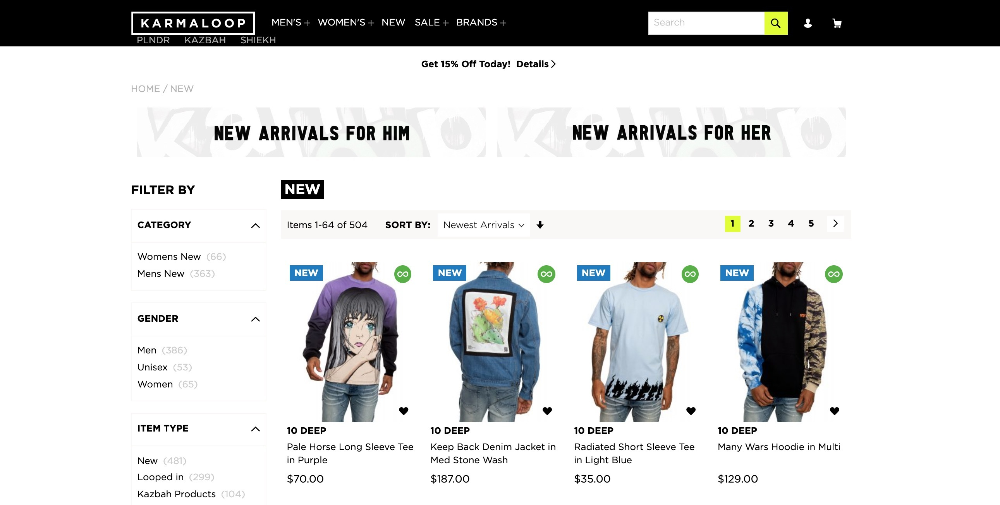
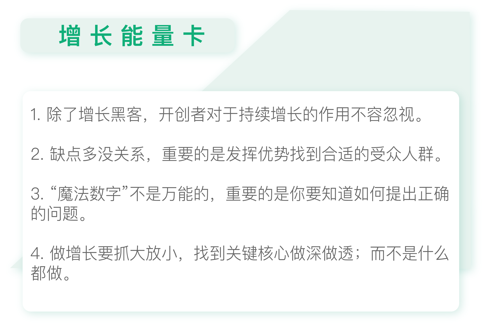

- 00 开篇词 人人都是增长官.md
- 01 预习 增长小白如何“弯道超车”？.md
- 02 预习 如何理解“增长”？.md
- 03 预习 不同职能如何做好增长？.md
- 04 预习 做增长如何处理职能间的矛盾？.md
- 05 正确目标找不对，天天加班也枉然.md
- 06 活学活用北极星指标.md
- 07 OKR如何助力增长？.md
- 08 不懂用户调研？那就对了！.md
- 09 调研目标：在差异性洞察中找到爆破点.md
- 10 数据分析：在“花式对比”中发现玄机.md
- 11 用户分类：围绕北极星指标细分人群.md
- 12 用户访谈：像侦探一样寻找破案线索（上）.md
- 13 用户访谈：像侦探一样寻找破案线索（下）.md
- 14 提炼用户差异，发现增长契机.md
- 15 挖掘产品优势，打破增长瓶颈.md
- 16 定位营销差异，抢占用户心智.md
- 17 一级方向：找到增长爆破点.md
- 18 B端产品如何调研？.md
- 19 全局规划增长机会.md
- 20 统筹全局的用户增长地图.md
- 21 案例解析：定义关键增长指标.md
- 22 正负双向洞察，找准切入点.md
- 23 二级机会：制定增长策略.md
- 24 为一家濒临破产的公司制定增长策略（上）.md
- 25 为一家濒临破产的公司制定增长策略（中）.md
- 26 为一家濒临破产的公司制定增长策略（下）.md
- 27 为什么指标数据怎么优化都不提升？.md
- 28 案例解析：打造增长闭环（上）.md
- 29 案例解析：打造增长闭环（下）.md
- 30 案例解析：唤醒沉睡用户（上）.md
- 31 案例解析：唤醒沉睡用户（下）.md
- 32 没有分解，就无缘增长.md
- 33 四个要点颠覆传统需求文档.md
- 34 三级落地：无限场景应用.md
- 35 手把手教你设计一次成功的实验（上）.md
- 36 手把手教你设计一次成功的实验（下）.md
- 37 积少可成多，别针换别墅.md
- 38 四级延续：增长组件库案例.md
- 39 以用户为中心增长.md
- 增长导航图 增长专栏的知识架构是怎样的？.md
- 尾声 结束意味着新的开始.md
- 预习答疑 你需要一张思维导图吗？.md
24 为一家濒临破产的公司制定增长策略（上）
你好，我是刘津。
模块三的内容马上就要收尾了，到现在为止，我们已经了解了一级方向和二级机会。也许你觉得自己的概念已经学习的不错了。不要着急，我们很快就会在模块四中，学习怎么具体地落地执行。
在下一个模块开始之前，我们先用之前学习到的内容来分析一个案例，做一个小练习。因为篇幅有些长，所以我分成了上、中、下三讲。
这个练习是这样的：把一个市面上的增长案例用我们学过的方法套用、演练一遍。
这样做，一是为了熟练掌握我们前面学习过的内容；二是通过这个练习，以后你可以尝试把自己知道的增长案例复盘一遍，做到知其然，并知其所以然。这样就解决了以往我们学习增长知识，只能看别人的华丽案例，却不知如何复用的窘境。
这个练习使用的是一个海外案例，这个“逆风翻盘”的案例非常有意思，你可能曾经看过，我在这里简单叙述一下。

美国潮牌电商巨头Karmaloop由于扩张过度，不幸破产，公司被廉价转手于人。一位传奇人物德鲁·萨诺茨基（Drew Sanocki）临危受命，出任这家公司的CMO，围绕获客、激活、留存、增加收入这几个关键点，用一系列增长策略挽救了这家公司。
如果你有兴趣的话，可以上网搜一下这个案例，文章中我就不再赘述了。
这一讲中的内容主要是结合前二十几讲的内容，谈谈我自己对这个案例的理解和一些不一样的观点，帮助你在下一讲更好地进行模拟分析演练。
打江山与守江山同样重要
很多人看完这个案例后都会惊叹于德鲁超强的营销能力。
但其实一家公司想要成功，开创者的作用是不容忽视的。德鲁之所以能在这么短的时间让一家公司起死回生，本质上是因为这是一家定位正确、对用户有价值的公司。否则德鲁再怎么运作都于事无补。
这家公司的开创者，名字叫格雷格·塞尔科（Greg Selkoe），本科毕业于罗林斯学院人类学专业。2000年的时候，格雷格在他父母的地下室里创建了Karmaloop这个潮牌电商平台。这起源于他自己爱好的街舞、涂鸦等“边缘文化”。同时，他还患有多动症（注意缺陷多动障碍）。在2013年的一次采访里，他还重点表达了多动症是怎样帮助他取得成功的。
还记得我前面说过的做增长很重要的一点是发现自身优势，寻找最长板吗？这位创始人的个性特征和学业背景可能并不符合主流的社会要求，但是他另辟蹊径，在另一个小众群体里找到了自我价值。
后来，这家公司不断壮大，每年的营收都是成倍增长，甚至有嘻哈巨星为他站台点赞。2013年，公司登上顶峰，营业额达到上亿美金，远远甩开其它潮牌电商，稳居行业第一，成为了美国最大的潮牌经销平台。但由于格雷格经营不善，大肆扩张，在2014年公司就已经出现了巨额亏损。
中国有句古话叫“打江山容易，守江山难”。的确，开拓一个新领域和妥善经营业务，对人的要求是完全不一样的。
开拓一个新领域需要大胆创新，结合自己的优势找对目标人群，提供差异化的服务，也就是我们说的“一级方向”。而稳定妥善地经营业务需要的是励精图治，既要秉承一级方向，又要精细化运营，得出“二级机会”。这两者缺一不可。无论是创新者还是经营者，其实都在为增长发挥巨大的作用。
“魔法数字”不是万能的
如果你去看过Karmaloop的案例，你就会知道德鲁是通过数据分析，发现了高价值用户的秘密：80%的情况下，高价值用户会在第一次购物后的30天内完成第二单。
我在第22讲也提到过：LinkedIn用户一周内添加5个社交关系，Facebook用户10天内添加7个好友，就能够保证较高的留存率。
这就是增长黑客口中津津乐道的“魔法数字”，第三方数据分析平台GrowingIO甚至还为此做了一个功能，帮助你找到“魔法数字”。
表面上看，“魔法数字”好用又神奇，但其实在实际应用中想要使用它是困难重重的。因为大多数的公司，根本找不到自己的“魔法数字”。这就好像大海捞针一般，可遇不可求。
包括在第11讲提到的“聚类分析”，也属于类似的情况。通过数据分析把用户分成不同的类别的方法未必每次都能奏效，你需要不停地调整分类维度来“碰运气”。
德鲁之所以能成功地找出“魔法数字”，是因为他并不完全依靠数据，而是先提出了问题：高价值用户究竟花多久完成第二次购买？顺着这个问题，他才发现了重要的规律。
但是如何提出正确的问题呢？这可让很多人犯了难。毕竟不是所有产品都能直接套用这个思路。这也是很多人看了若干经典增长黑客案例，在实际工作中还是无从下手的原因。
抓大放小，把重要事情做到极致
格雷格之所以没有坚持到最后，是因为他想做的事情太多了，但是哪件都没有做好。
2008年，格雷格拿到了一大笔融资，有了花不完的钱，之后就开始大肆扩张，建立了一系列品牌。你还记得因广告语“凡客体”火遍大江南北的凡客吗？不得不说，太过快速的扩张也是压倒凡客的重要原因之一。
当然，现在说起来你知道这样做是不对的，但是作为当事人，这样的情况真的很难避免。因为一家公司势头正好的时候，卖什么都很赚钱，当发现不对劲的时候往往为时已晚。这时即便做出一系列举措去节约成本，公司也已经元气大伤了。
格雷格不仅热衷于扩张品牌，还筹划了一档电视节目，去进一步强调自己在潮流界的地位。这时公司赚钱的速度已经远远赶不上烧钱的速度了。结果，所有扩张计划均以失败告终，仅电视节目就烧掉了1400万美金，节目也没有上线。
为了偿还贷款，格雷格在紧急情况下又做出了一系列错误的决策。比如采取降价策略清理库存，很多高端品牌都能看到40%以上的折扣。这完全违背了产品的核心价值，不仅没有挽回收入，反而使得众多品牌商纷纷撤出。
为了进一步降低成本，格雷格决定采用直发模式，即自己不囤货，是顾客下单后由品牌商直接发货。但是，当时的客服和物流根本跟不上订单进度，经常会出现顾客收不到货又退不了款的情况。这一举动让Karmaloop的老客户们也逐渐失望离去。就这样，一步错，步步错，2015年的时候局面彻底失控，公司的营业额缩水到原来的一半，公司正式宣告破产。
可以看到，在运营公司方面，格雷格和德鲁的风格完全不一样。
格雷格是粗放型的花钱，烧钱引流，但也正因为他敢想敢干，才开创了这家公司。而德鲁是精细化运营，力图把一件事情做到极致。比如，德鲁首先去寻找高价值用户，因为他知道这20%的高价值用户可能贡献出的是80%的收入。然而现实中，我们大多数时候却把这20%的高价值金主当作普通人来对待，这显然是不合理的。
这也就是我在专栏里一直在反复强调的，做增长要抓大放小，找到关键核心，把它做深做透，才能“四两拨千斤”的增长。
如何找到万能的增长思路？
德鲁的案例基本还是来自于AARRR的思路，即获客、激活、留存、变现、传播。顺着这个思路，德鲁做出了很棒的策略，取得了很好的效果。
但这个时候你可能就会问了：这些具体策略怎么得出来的？换到我的产品里怎么办？
很明显，AARRR的思路过于宽泛，里面的这些决策细节是无法被复制的。但是你可以通过前面二十几讲中的内容和思路，把这个例子复盘一遍，明白要如何通过一定的程序得出具体策略。
如果你现在无法自行复盘也没有关系，在下一讲，我会带你手把手地把这个例子串一遍，用“一级方向”“二级机会”的步骤一步步地帮助你复习。
你也可以用这套方法去分析其它的增长案例，都没有问题。因为这是一套通用的、解决问题的、非常具体的思考框架，它可以用在任何产品上。它的目的就是解决大量增长案例背后缺乏具体的方法论基础、很难被复用的问题。

思考题
今天的思考题要求你先去看Karmaloop的增长案例以及这篇文章，自行做个复盘。这里不强求你马上就会套用“一级方向”“二级机会”的体系，也不建议你简单复制别人长篇大论的评价，更多的是希望你有些自己的、不一样的思考在里面。
欢迎把你的思考和疑问通过留言分享出来，与我和其他同学一起讨论。如果你觉得有所收获，也欢迎把文章分享给你的朋友。

© 2019 - 2023 Liangliang Lee. Powered by gin and hexo-theme-book.